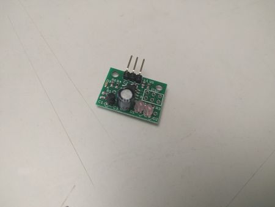

Archived recovered from BigBox_Parts_Preparation 20160807071206 · source: wiki.e3d-online.com/wiki/Single_&_Dual_Direct-Drive_IR_Sensor_Bracket
Recovered from an older version of BigBox Parts Preparation (20160807071206), section "(15) Single & Dual Direct-Drive IR Sensor Bracket" — the separate wiki page is not in the archive.

The IR Sensor.
Insert IR sensor with prongs facing up and on the ‘higher’ side of the bracket. Screw together.
It is worth checking now that the IR sensor mount moves smoothly in the slots on the X-Carriage as the sensor has to be moved up and down during calibration. It is very difficult to clean up the sensor mount and the X-Carriage slots once the sensor is mounted.
Note : There was an error in the fixings kit and in some instances M2.5 Hex Nuts have been supplied and not Square nuts.